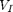

StanfordSlides-05.html
The simplest possible IOG is applied to the null string
fprintf('res=%s', GEM('', 'r=;'));
res=
IOG g1 shows the use of ' and " to delimit members of  and respectively.
g1 = 'r=''x''"y";'; fprintf('%s\n', g1);
r='x'"y";
fprintf('res=%s',GEM('x', g1));
res=y
IOG g2 shows the use of additional rules to describe alternatives
g2 = 'r=s;s=''1'';s=''2'';'; fprintf('%s\n', g2);
r=s;s='1';s='2';
fprintf('res=%s', GEM('1', g2));
res=
| PREV | NEXT |